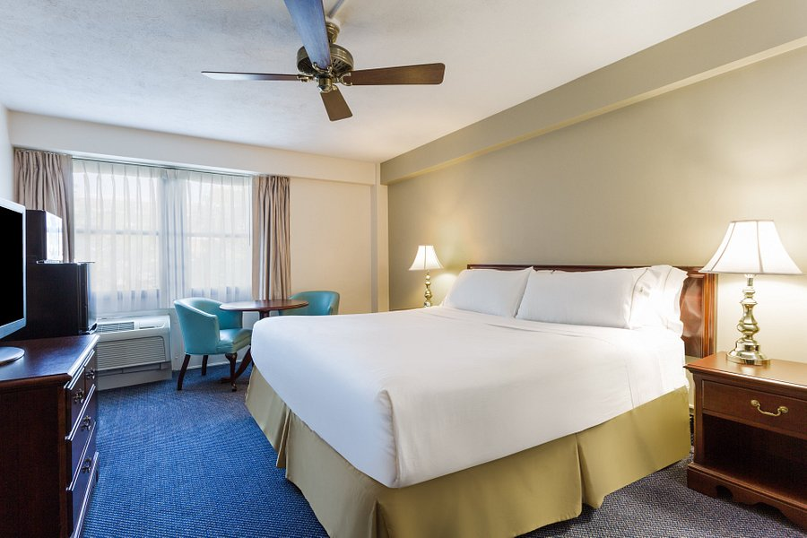

A hotel is an establishment that provides paid lodging on a short-term basis. ... Hotel rooms are usually numbered (or named in some smaller hotels and B&Bs) to allow guests to identify their room. Some boutique, high-end hotels have custom decorated rooms. Some hotels offer meals as part of a room and board arrangement. The precursor to the modern hotel was the inn of medieval Europe. For a period of about 200 years from the mid-17th century, coaching inns served as a place for lodging for coach travelers. Inns began to cater to richer clients in the mid-18th century. One of the first hotels in a modern sense was opened in Exeter in 1768. Hotels proliferated throughout Western Europe and North America in the early 19th century, and luxury hotels began to spring up in the later part of the 19th century. Hotel operations vary in size, function, complexity, and cost. Most hotels and major hospitality companies have set industry standards to classify hotel types. An upscale full-service hotel facility offers luxury amenities, full-service accommodations, an on-site restaurant, and the highest level of personalized service, such as a concierge, room service, and clothes pressing staff. Full-service hotels often contain upscale full-service facilities with many full-service accommodations, an on-site full-service restaurant, and a variety of on-site amenities. Boutique hotels are smaller independent, non-branded hotels that often contain upscale facilities. Small to medium-sized hotel establishments offer a limited amount of on-site amenities. Economy hotels are small to medium-sized hotel establishments that offer basic accommodations with little to no services. Extended stay hotels are small to medium-sized hotels that offer longer-term full-service accommodations compared to a traditional hotel.
A hotel is an establishment that provides paid accommodation, generally for a short duration of stay. Hotels often provide a number of additional guest services, such as restaurants, bars, swimming pools, healthcare, retail shops; business facilities like conference halls, banquet halls, boardrooms; and space for private parties like birthdays, marriages, kitty parties, etc. Most of the modern hotels nowadays provide the basic facilities in a room- a bed, a cupboard, a small table, weather control (air conditioner or heater), and a bathroom- along with other feature like a telephone with STD/ISD facilities, a television set with cable channel, broadband internet connectivity. The earliest recorded evidence of the hospitality facilities in Europe dates back to 500 BC. An ancient city, such as Corinth in Greece, had a substantial number of establishments that offered food and drink as well as beds to the traveler. The inns of the biblical era were of the primitive type, offering a cot or bench in the corner of a room and, at times, even a stable. Travelers used to stay in a large hall. Privacy and personal sanitation were non-existent. In the 3rd century AD, numerous lodging premises mushroomed along with the extensive network of brick-paved roads throughout Europe and minor Asin (part of Asia adjoining Europe). The lodging hotels were known as mansions during that time.